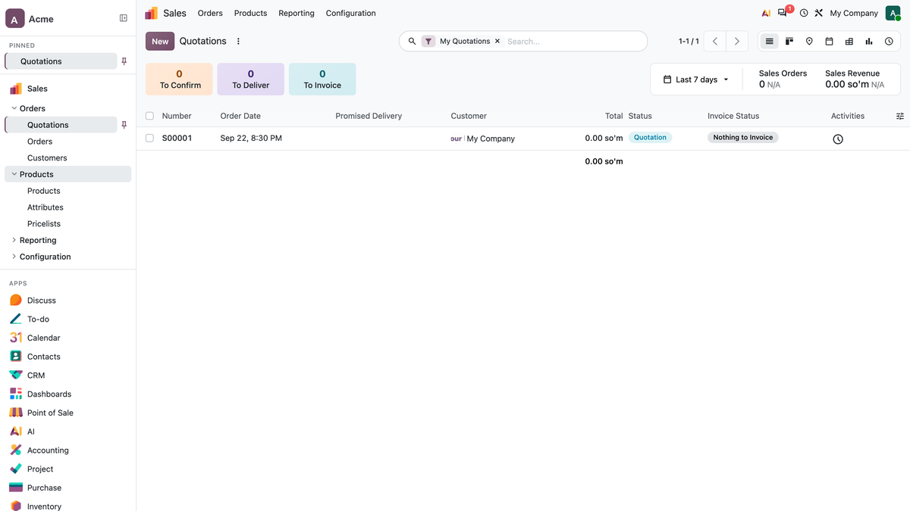
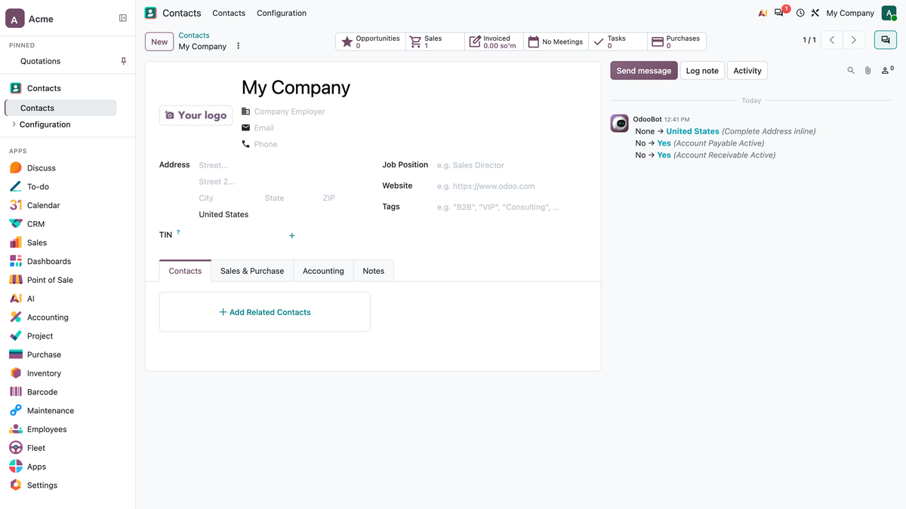
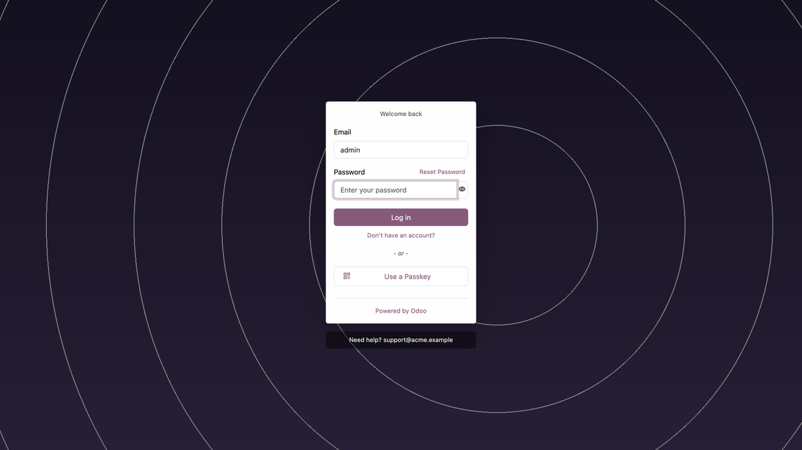
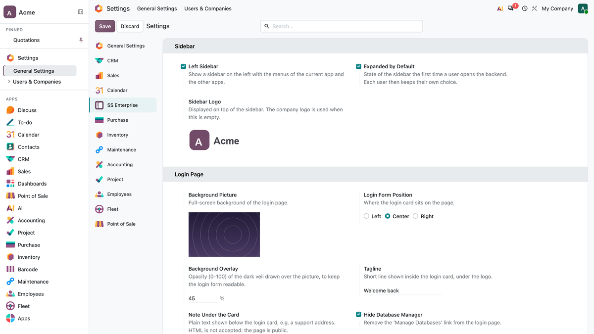

A light UI layer for the Odoo 20 backend. It does not replace Odoo's own design — the navbar, the views and the login card keep their standard markup and styling. Everything here is added next to them, and every part can be switched off.




web and mail only.LGPL-3